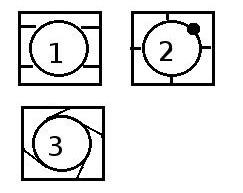

3.3.1. Viivottimella leikkausSuorat linjat viivottimella ovat helpoimpia leikattavia. Viivottimen pitäisi olla niin paksu että lasiveitsen poski tukee siihen, ei rissa. Viivottimen kanssa leikattaessa on hyvä jos veitsen poski nojaa leveältä viivottimeen. Sitä varten ei kuitenkaan kannata hankkia eri veistä, jos tavallinen on kapea. Viivottimella on ikävä taipumus luistella lasin pinnalla. Sitä on yleensä tuettava toisella kädellä. Apuvälineenä voi myös käyttää pientä kumipalaa viivottomen pohjassa. Sellaisen saa vaikka polkupyörän paikasta. Omaan suorakulmaan olen suihkuttanut kontaktiliimaa. Kun se on päivän pari kuivunut, sillä on sopiva kitka.Hiukan tottumista vaatii että lasiveitsen painaa sopivasti viivotinta vasten ettei se lähde vapalle puolelle omille teilleen. Helposti tulee painaneeksi veitsen vartta viivottimen suuntaan, jolloin rissa siirtyy kauemmas. Opettele myös leikkaamaan viivottimen toista reunaa vasten. Aina ei ole tilaa saada viivotin samalle puolelle. Mittatarkassa työssä muista että rissa kulkee pienen matkan päässä viivottimesta. Useimmiten tämä väli on 2.5 mm.
Myös hyvin tarkkoja kaarevia leikkauksia varten
kannattaa tehdä paksusta pahvista oikeanmuotoinen ohjain.
3.3.2. Ympyrän leikkaaminenHelpointa on, jos käytössä on lasiharppi. Se ei kuitenkaan kuulu ensimmäisiin hankintoihin. Ilman harppia leikataan käsivaralta. Transparentin lasin kanssa on helppoa. Piirrä ympyrä paperille ja seuraa viivaa lasin läpi. Sijoita lasi pöydän kulmalle, ja leikatessasi kierrä pöydän ympäri niin että viiru syntyy koko matkan suunnilleen itsestäsi poispäin. Opaakille lasille leikkaa ympyrän malli paperista ja piirrä lasin yläpintaan huopakynällä.Kun olet saanut ympyrän viirun, käännä lasi nurinpäin puolipehmeälle alustalle ja painele peukaloilla viirun kohdalta kunnes viiru aukeaa. Paineleminen on helpointa aloittaa kohdasta jossa on paljon lasia ympyrän ulkopuolella. Musta täplä kuvassa 2. Tämä vinkki on Patty Greyn ohjeista. Spectrum ja Artista aukeavat hyvin näin, Bullseyen kanssa se on vaikeampaa. Käännä lasi varovasti ympäri, ja piirrä lasiveitsellä päästöt. Joskus näkee ohjeita joissa päästöt on tehty kohtisuoraan ympyrää vasten. Silloin aukaiseminen on vaikeampaa. Etuna taasen on että jäännöspaloihin ei jää vaarallisiateräviä kärkiä. Älä vedä apuviiruja ihan ympyrään kiinni, jätä pari milliä väliä. Taitto hyppää tämän raon yli ja saa kiinni ympyräviivasta. Suunnittele päästöt niin että jäännöspalat ovat sellaisa joille löytyy käyttöä. Usein kannattaa aloittaa vähän suuremmalla lasilla josta jää järkevät jäännöspalat. Nyt voit taittopihdeillä irrottaa suikaleet ympyrän kehältä. Kun ympyrän leikkaa käsivaralta, Leikataan pahvimalli, jonka avulla ympyrä piirretään lasille tussilla. Viiru aloitetaan ympyrän kehältä ja jatketaan lasin reunaan. Siitä kohtaa kun viiru irtosi piirroksesta aloitetaan toinen viiru ja näin kierretään koko ympyrä. Aukaisu aloiteaan lasin reunasta pihdeillä. Ylös |
 . |
| <- edellinen sivu
Viirun vetäminen <- jakson alkuun <- Etusivulle |
Copyright 2007,2014 Lauri Levanto ;URL http://lauri.lsd.dk/lasi/Copyright |
seuraava sivu -> Muotoon leikkaus |